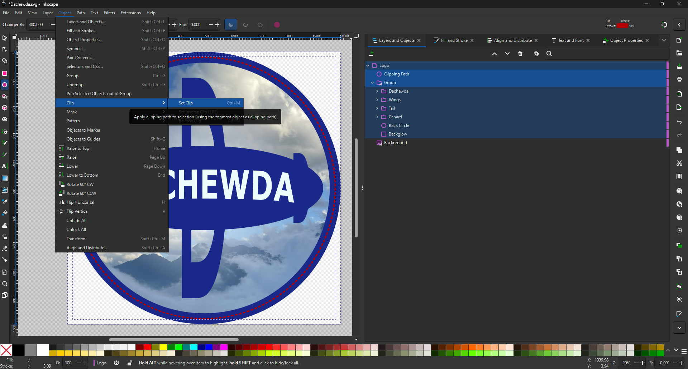

How to Upload an Extension to Firefox
- Go to: about:debugging#/runtime/this-firefox
- Click the “Load Temporary Add-on…” option.
- Select the manifest.json file of your website extension.
Load it into Firefox Temporary Add-ons
Firefox will load the extension and show its icon in the toolbar.
Color Testing
G1
G2
G3
Dachewda
P3
P2
P1
Inkscape Logo Creation
Surroundings of logos can be clipped by creating a temporary shape as a clipping path.

Use 'ctrl shift D' to open Document Properties.
The page can be resized to the fit the logo using the "Resize to content:" button.